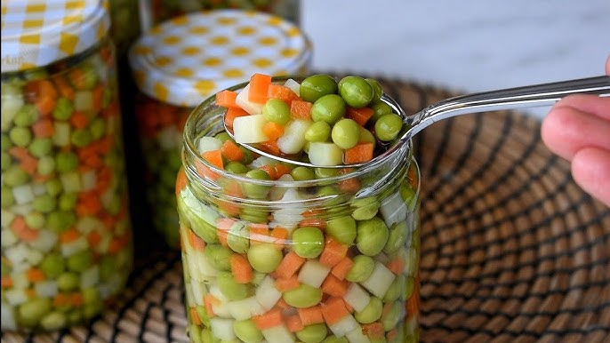
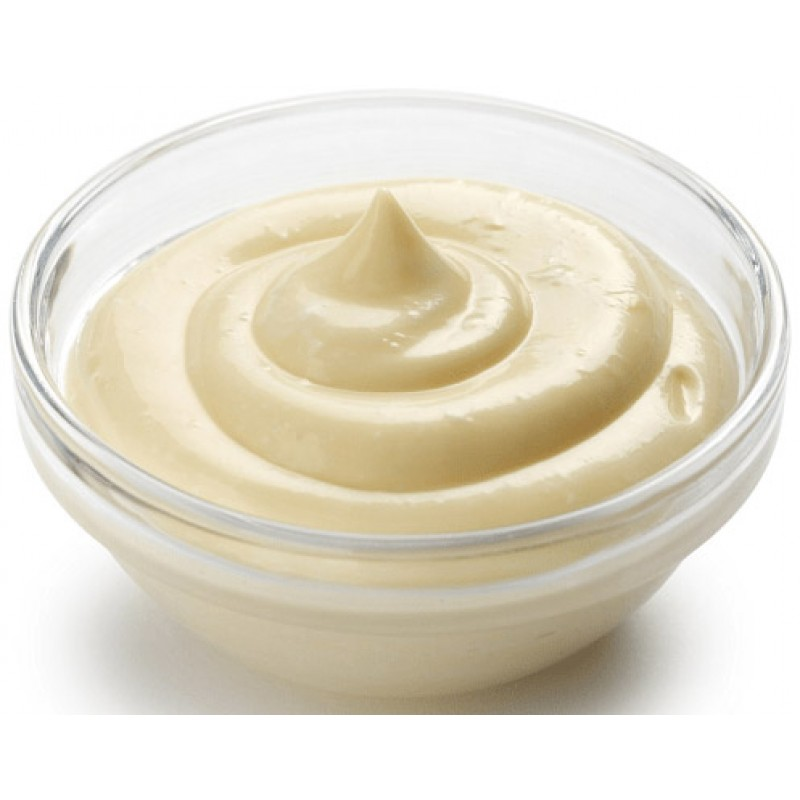
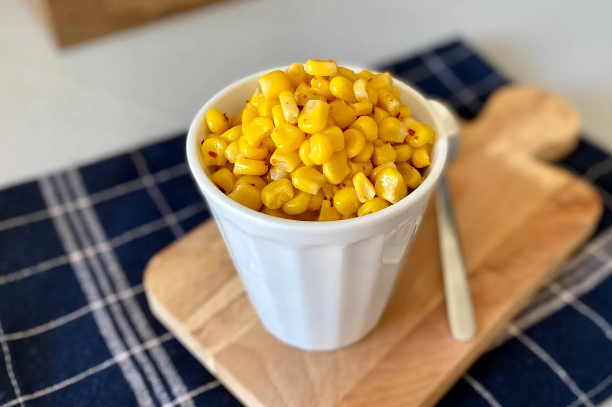
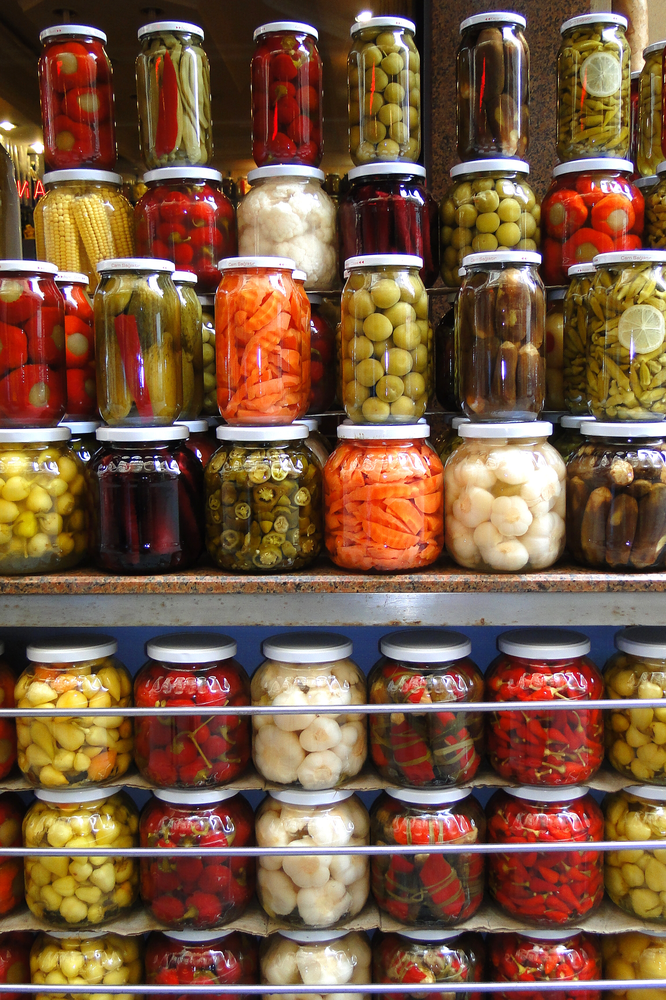

Hazırlanışı
Malzemeler:
Garnitür

Mayonez

Konserve Mısır

Turşu(kornişon)

Yapılışı
- Öncelikle mayonez ve yoğurdu bir kabın içinde çırpın.
- Garnitürü ve mısırları suda süzün ve yoğurt karışımına ekleyin.
- Kornişonları da küp şeklinde doğrayıp karışıma ekleyin ve hepsini karıştırın. Üzerini maydanoz ile süsleyebilirsiniz.
Afiyet olsun!
Navigasyon
- Anasayfa
- Başlangıç
- Kısır
- Amerikan Salatası
- Patates Salatası